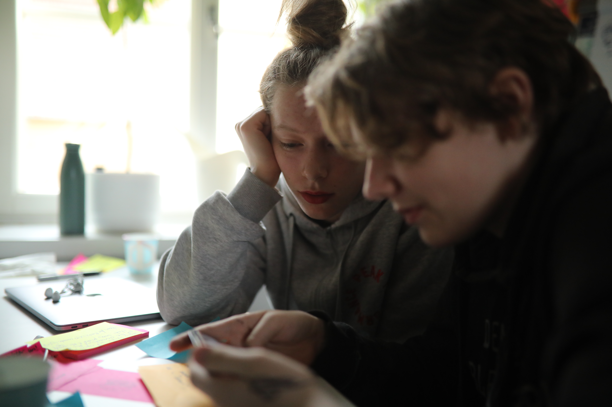
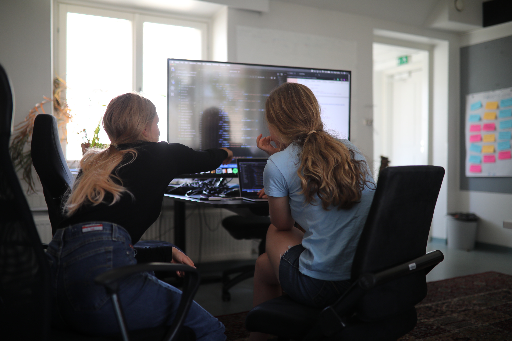
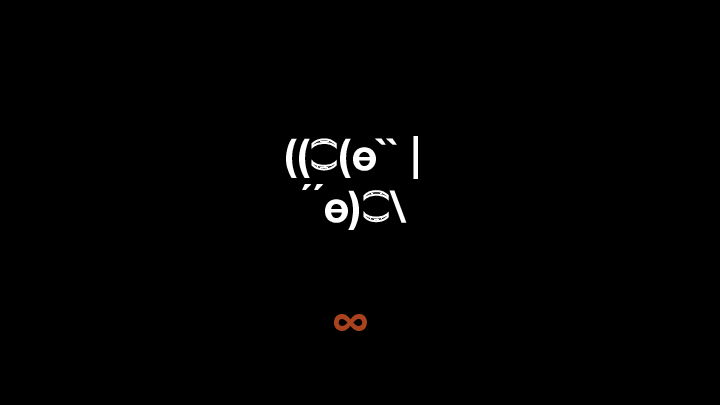

The Summer Lambs Project
How we offered teenagers a summer job and taught them to code
— A recursive dogfooding story
Spaced Repetition with The Summer Lambs
This summer we organized a lovely experiment, the Summer lambs project, where we offered a handful of teenagers the opportunity to get some work experience within tech and to offer them an opportunity to learn to code.
We ended up using a pattern that could be described as dogfooding mixed with a recursive learning loop. It turned out to work wonderfully and meant that the high schoolers programmed an actual real world application but also learned about ideas in programming and computer science through dogfooding the same app that they were programming.
The product they built is a quiz app that is meant to help people trying to learn through spaced repetition. The larger vision for the product was that they would build something during the six weeks that could become a wikipedia of quizzes; a service where all the source materials of the world such as books, videos and lectures could be found in a quiz form. When you read a chapter from a book, you will learn the content by practising with the quiz app, and by returning to the app until you have properly digested it.
Crash Course Computer Science
For most of the days during the six weeks that the kids, or the "lambs", were working, they would watch one or two videos in the mornings. Then they would generate about 20 questions for each video. Every day they would watch a new episode of the absolutely brilliant Crash Course Computer Science series. Sometimes they would also watch some more hands on videos and tutorials related to programming.
The Crash Course Computer Science is a fantastic resource. We had already been using it at home with my kids during the past year as a fun way to learn computer science. We used to watch the videos togheter, collect insights on sticky notes. Then we would post them on a wall and return to them, often while brushing our teeth, to review and discuss them regularly. This experience was also one of the inspirations that led to the Summer Lambs Project.
The series consists of short 10+ minute youtube videos packed with information. It is designed very well and the manner in which the host Carrie Ann Philbin @MissPhilbin explains computer science with wonderful clarity yet at some considerable depth, making it both fun and inspiring. The series basically covers what, say, a first year computer science student would learn at university, albeit in a much more enjoyable way.
Before watching the videos and generating content for them, the lambs would actually start each day by doing 50 random questions from the quiz. This was a natural way to assist them in their learning. Moreover, it was a good lesson in the merits of dogfooding while developing digital services.

Teaching highschoolers to code in 6 weeks
The rest of the day was spent programming. We decided to throw them in at the deep end right from the start. They started coding on the very first day. Of course this actually meant they were mostly copying code that was presented to them. At the start we were following a JavaScript tutorial by James Q Quick where a simple quiz app is built. This was a perfect way to quickly get started and see some tangible results.
In terms of language we chose JavaScript. Yeah, we know. Not perhaps our favorite languages in every sense nor the best. Clojure/ClojureScript, PureScript or even TypeScript comes to mind as something that might have been preferred. Nor is JS maybe the best choice in terms of teaching programming. Many schools and universities seem to opt for Python these days.
According to the StackOverflow 2019 survey, as many of you are no doubt are aware, JavaScript is the most popular programming language — as it has been for seven years in a row now. JS has pwned the web stack. We saw this popularity as an important consideration as it increases the utility of the language. The number of resources out there that can help your learning journey are limitless as well as is the general ecosystem that can be taken advantage of to solve almost any problem at hand.
Perhaps an even more important rationale behind the choice is the tooling, which can be straight forward, particularily if you are writing vanilla ES6 for the frontend. It does not require the compiling steps which increases the distance between coding and seeing the results of that code, which helps the beginner experience.
Also the "replesque" experience that the console provides is an asset. It might not be a real repl nor a great as repl experiences go, but it does help learners tremendously to do step by step iteration, data exploration, experimentation and help overall easier debugging. The lambs learned very quickly to do experiments in the console when they did not understand something. Furthermore, as ES6 is now supported in the modern browser, this also helped to make this case.
Google Drive as backend
Another important decision was that we chose to focus exclusively on the front end to limit the complexity of the systems that the lambs would have to grok. As consequence we ended up using Google Spreadsheets as the backend! It is easy to manually input data manually to a sheet, while they were creating content for the quiz, and it is also fairly trivial to retrieve data from there.
The quiz content was therefore entered into a Google Sheet and stored there. The lambs also developed a feature where users can submit feedback on how to improve a particular question and these are collected into another sheet. Another similar implementation was the feature where the users are asked to contribute a question of their own to the platform in order to offer the users the option to do some active learning.
The highscore functionality is slightly more complex as there is some latency after a submission before an updated row can be retrieved through the Google Sheets CSV-api. This led to some hacks in the app, but this case also highlighted to the learners why backends are needed and what kind of basic security concerns need to be solved. In the current implementation anyone can rather trivially just inject any highscore with any nickname into the sheet. Still, it made a lot of sense to try to limit the scope of the project.
Also version control and mob coding
The lambs also learned stuff like version control, ie. command line Git, GitHub and pull requests. They were also introduced to the basics of some agile patterns and thinking. We especially made sure to do frequent retro's which the kids seemed to find useful and enjoy. Pair coding as well as mob coding was also something they were taught.
Even though we did invest and "donate" a considerable amount of our own time to this project, we did also try to get the kids to do as much p2p learning as possible. Mob coding was used especially in the beginning as it helps complete novice learners not to get stuck as often, as they through mob coding got to "pool" their knowledge and solve problems as a group. When they got a bit further in their learning journey they started to focus much more on pair coding. It demands a bit more from each participant and it also worked very well.

The experience of teaching from scratch
The experience of teaching someone who is starting from scratch was an enourmously difficult but also fascinating and gratifying experience.
Something that struck us as especially interesting was how important it is to carefully choose what not to teach. This might even be more difficult than, indeed, to choose what to teach. There are so many layers of abstractions even in a simple front end JS app and as us humans only can keep a handful of concepts in our minds at once, it is easy to overload the learner with too many things. Just to keep track of simple programming fundamentals and the system ie. how the browser, html, css, javascript and the dom interact and are related to each other is not an easy task for any beginner.
You have to be careful to only introduce one idea at a time, even though we chose to break this rule at the beginning and did jump right in at the outset. Seeing the effect of the code you are writing is necessary to build motivation.
Another wonderfully gratifying experience was to see how the mechanics of repetition work in learning. It is not very surprising, but to see it unfold in front of your eyes was super fascinating.
For instance, to learn how the map function works takes careful repetition multiple times until it sticks. Or take the git commands. We repeated the same steps every day for about a week until they stuck. I'm not entirely sure we appreciate the mechanics of this when we go about our business ordinarily. We communicate and think people remember and understand. Usually they don't.
Fantastic Kids
It needs to be said that the kids were amazingly bright and fast learners. It was such a pleasure to work with them. There were many moments when we were taken aback when realizing how they had figured out how to do something very advanced that had hardly been mentioned.
We are extremely happy and proud with what the lambs managed to learn and produce in such a short time. We are also grateful for the opportunity to learn ourselves. You can get a glimpse of how amazing these kids are in the video above.
We also want to stress our gratitude to our partner, the Smart Data and Audience Insight team at Yle, The Finnish Broadcasting Corporation and Eija Moisala there who got excited by the idea and at very short notice decided to join the project and sponsor two of the lambs.
Of course the project would not had been possible without the work of people like Carrie-Ann Philby and the team who did the Crash Course Computer Science series as well as the Green Brothers offering the Crash Course concept and content to the universe. Also a big hand to James Q Quick and Brad Traversy at Traversy Media who have created some great tutorials for learners of programming, which we enjoyed during our adventure.
You can try out the quiz app at https://8-bit-sheep.com/various/lamb-quiz/index.html! As the lambs put it "It's not ready and will probably never be ready, but it works!"
The planning, production of the project and the teaching was mostly done by yours truly, but rest of the sheep at 8-bit-sheep are owed gratitude for their help and efforts. A special shoutout to Jaakko Ojalehto for supervising and expertly teaching the lambs for some of the summer.
